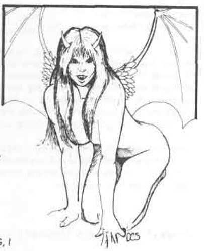
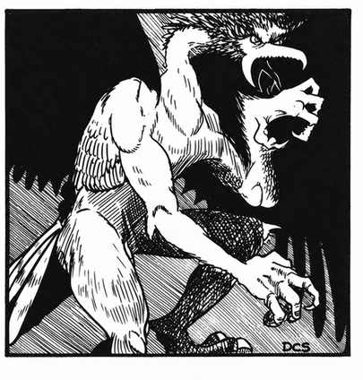
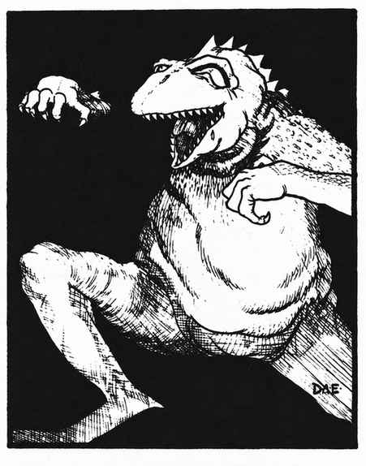
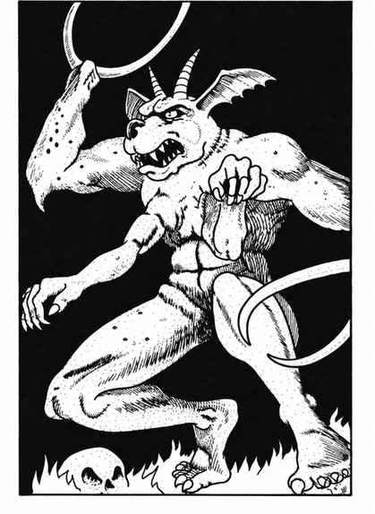
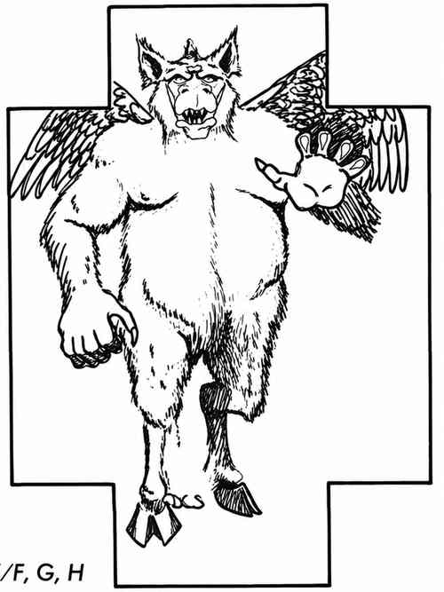
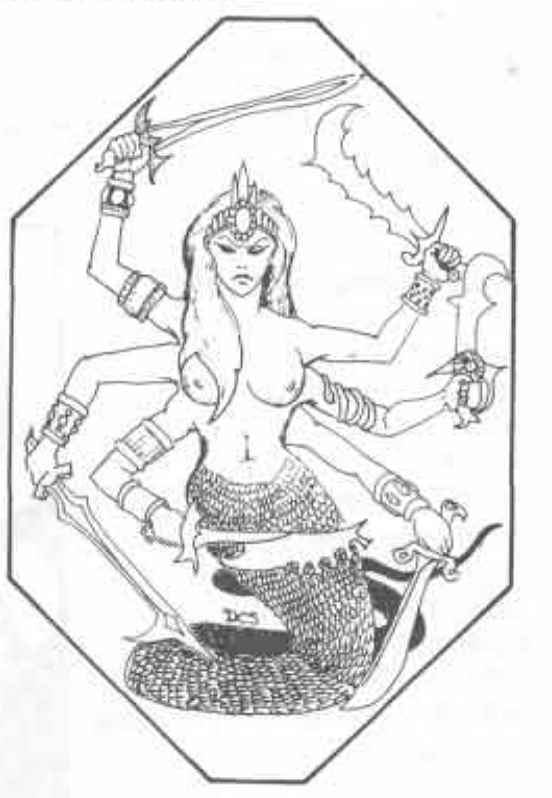
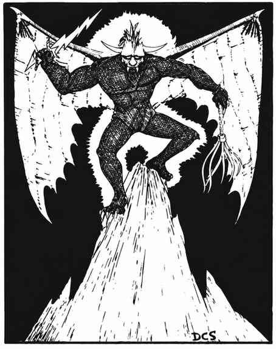
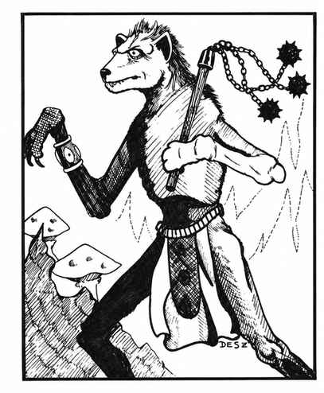

恶魔 · Demon
恶魔各有许多独特特征与非凡能力，尤其高阶恶魔领主与恶魔王子更是如此。下文先说明它们共有的特征；各类型与个体的具体情况见相应条目。
| 攻击方式 | 对恶魔造成的伤害 |
|---|---|
| 酸液 | 全额 |
| 寒冷 | 一半 |
| 电击（闪电） | 一半 |
| 火焰（龙息、魔法火焰） | 一半 |
| 气体（毒气等） | 一半 |
| 铁制武器 | 全额 |
| 魔法飞弹 | 全额 |
| 毒素 | 全额 |
| 银制武器 | 无* |
\* 若某类恶魔会受到普通武器伤害，则银制武器仍按相应武器类型造成伤害。
恶魔可以从自身位面前往塔耳塔罗斯、哈迪斯或潘德蒙尼姆，也可以漫游于星界；但若没有召唤、开启传送门、说出其名字等外力相助，就无法进入物质位面。恶魔皆为混乱邪恶；强大而聪明者统治弱小而愚钝者。较弱的恶魔会毫不犹豫地攻击，并战斗至死。V 型及以上的恶魔若在物质位面被杀，实际上并未真正死去：其物质形体被毁后，它会被逐回原本所在的位面，直到一个世纪过去，或有人帮助它再次外出。不过，若在恶魔自己的位面遭遇它们，则可以将其杀死。恶魔绝不会被制服；只要条件允许，它们便能同时攻击两名甚至三名对手。
恶魔绝不会自愿侍奉任何人或事物。若被魔法或威胁强迫，它们会不断伺机杀死主人或囚禁者。恶魔若喜欢某人，通常会把对方掳回自己的位面作奴隶（但会成为受宠的奴隶）。任何阵营的角色都能召唤恶魔，但要控制它则是另一回事。咒法法阵可以阻挡 I–V 型恶魔；要阻挡 VI 型及更强大的恶魔，则必须使用特殊五芒星。地下城主应谨慎裁定召唤者用来换取恶魔效劳的威胁或报酬。神圣的善良遗物或神器会驱退恶魔。
恶魔会频繁游荡于星界与以太位面；处于以太状态的人也会引起它们注意。若有人说出某个强大恶魔的名字，地下城主可按 5% 的基础概率判定该恶魔听见并注意到说话者。若说话者既未准备好避开恶魔，也没有把握控制它，恶魔便会立即用最有效的方式杀死此人。
若在巢穴中遇到 I–VI 型恶魔，有 75% 的概率出现 1–6 只同一类型的恶魔；另有 25% 的概率出现 1–6 只混合类型（I–VI 型）的恶魔。
恶魔领主与恶魔王子会把自身的生命本质——也可以说是灵魂——保存在小型容器中，称为恶魔护符。持有护符的恶魔每天可以使用一次魔魂壶术。恶魔护符无法通过任何魔法手段辨识，外表也毫不起眼。最强大的王子未必需要随身携带护符，但较弱的恶魔通常必须将护符带在身上或放在身旁。护符持有者可在一次冒险期间控制其所属恶魔，但绝不能超过一天（24 小时）；之后必须将护符归还恶魔，也可以将其摧毁，使恶魔王子被放逐至深渊一年（此后只有再次被召唤才能返回）。使用恶魔护符极其危险：持有它会使招来其他恶魔注意的概率加倍；任何未受护符控制的恶魔都会立刻攻击持有者。如果控制者手中失去了护符，其所属恶魔便会立即以最有效的方式攻击，竭力杀死控制者，并把残骸带回自己的领地；此人将永远消失。反过来说，如果持有者谨慎回报恶魔提供的帮助，另付一大笔钱以补偿自己竟敢命令恶魔，并妥善归还护符，恶魔王子或许不会永远怀恨在心，也未必会伺机追杀。
除各类型与个体各自的特征能力外，恶魔还具有以下共同特性：I–III 型恶魔会受到非魔法武器伤害；IV 型及以上恶魔不受非魔法武器伤害。所有恶魔都具有红外视觉、黑暗术（半径因个体而异）、无误传送，以及开启传送门（具体规则因个体而异）的能力。恶魔具有一种特殊的心灵感应，能够理解一切有智慧的交流；智力达到平均或更高者，也能够进行交流。
狄摩高根 · Demogorgon
| 项目 | 数据 |
|---|---|
| 出现频率 | 极罕见 |
| 出现数量 | 1 |
| 护甲等级 | −8 |
| 移动力 | 15 寸 |
| 生命值 | 200 点 |
| 在巢穴概率 | 50% |
| 财宝类型 | R、S、J、V |
| 攻击次数 | 3 |
| 攻击伤害 | 均为特殊攻击 |
| 特殊攻击 | 见下文 |
| 特殊防御 | 仅 +2 或更好的武器可命中 |
| 魔法抗性 | 95% |
| 智力 | 超高智力 |
| 阵营 | 混乱邪恶 |
| 体型 | L（高 18 尺） |
| 灵能能力 | 每个头部 150；攻击／防御模式：全／全 |
恶魔领主之间本就纷争不断，而狄摩高根与奥库斯之间更有着无休无止的深仇大恨。狄摩高根是可怕的对手。首先，他的两个头各有强大力量。若他用两个头同时凝视敌人，便能催眠他们：对 1–3 个生命骰的生物影响 10–100 个；对 4–6 个生命骰的生物影响 5–40 个；对 7–9 个生命骰的生物影响 3–24 个；对 10–12 个生命骰的生物影响 2–12 个；对 13 个生命骰及以上的生物影响 1–4 个。生命骰超过 15 的目标可以进行对抗魔法的豁免检定，其余目标自动被催眠。这种群体催眠持续 1 回合；期间受害者会绝对服从大多数命令，但不会自我毁灭。之后 1–6 回合内，他们仍会倾向于相信或执行催眠留下的影响。若分别使用两个头的凝视，左头具有迷惑权杖的效果，右头则会使目标疯狂 1–6 回合；目标可进行对抗魔法的豁免检定以抵抗。
其次，狄摩高根能挥动分叉的尾巴，如鞭子般抽击；尾巴命中时按连枷进行命中判定，并吸取受害者 1–4 个等级。
第三，他的触手也是致命武器，每条触手命中都会造成 1–6 点伤害。体型较小的对手（尤其是人类、矮人、精灵等物质位面生物）还会受到腐朽侵蚀：被击中的肢体在 6 个近战轮后失去作用，再过 6 个近战轮便会脱落；躯干受到的每次击中则会在 6 个近战轮后永久损失总生命值的 25%，多次命中累积计算。若在受击后的 6 个近战轮内施展“治愈疾病”法术，便能保住肢体；之后需 1–4 周才能痊愈。若躯干受击后 6 个近战轮内施法，法术还会完全恢复该次造成的躯干伤害。
狄摩高根想施展时，可任意使用下列力量之一：持续黑暗术、魅惑人类、制造幻象（效果同幻象魔杖）、造成恐惧（效果同恐惧魔杖）、浮空术（视为 16 级魔法师施展）、侦测魔法、阅读魔法、阅读语言、侦测隐形物体、心灵感应、解除魔法、千里眼术、灵听术、暗示术、水下呼吸、改变自身形态、冰墙术、魅惑怪物；还可用每个头（或只用一个头）以念动能力移动价值 7,000 金币的重量。每天一次，他能施展心智薄弱术、震慑之语 Power Word Stun，以及任意一种徽记；也能施展木棍变蛇术，并开启传送门召来其他恶魔，成功率 85%：其中召来 I–IV 型恶魔的概率为 50%，召来 V 或 VI 型恶魔的概率也为 50%。
外观：有人认为狄摩高根是至高无上的恶魔王子；无论如何，它的力量都令人敬畏。这只身高 18 尺的巨型恶魔形似爬行动物。它有两个头，面容像邪恶的狒狒，也可能像毛色怪异的山魈。蓝绿色皮肤覆有蛇鳞，身体与双腿像巨蜥，两个脖子如蛇，粗壮的尾巴末端分叉。它没有手臂，取而代之的是巨大的触手。其外形足以证明它能够支配蛇类、爬行动物和章鱼等冷血生物。
朱比莱克斯 · Juiblex
| 项目 | 数据 |
|---|---|
| 出现频率 | 极罕见 |
| 出现数量 | 1 |
| 护甲等级 | −7 |
| 移动力 | 3 寸 |
| 生命值 | 88 点 |
| 在巢穴概率 | 60% |
| 财宝类型 | P×2、R×2 |
| 攻击次数 | 1 |
| 攻击伤害 | 4–40 |
| 特殊攻击 | 见下文 |
| 特殊防御 | 仅 +2 或更好的武器可命中 |
| 魔法抗性 | 65% |
| 智力 | 天才 |
| 阵营 | 混乱邪恶 |
| 体型 | L（高 9 尺以上） |
| 灵能能力 | 225；攻击／防御模式：全／全 |
朱比莱克斯是一团令人作呕的污泥状物质，身边常有其他胶质生物。在巢穴中，它通常有 1–4 只绿泥怪、2–8 只赭冻胶、1–4 只灰泥怪及 1–4 只黑色布丁怪相伴；这些生物并非它的奴仆，只是被其吸引。其他恶魔都躲着它走。
朱比莱克斯周围持续笼罩半径 15 尺的黑暗；注视它的生物必须进行对抗魔法的豁免检定，否则会因恐惧而逃跑。它周围 10 尺范围内温度极低。每个近战轮它恢复 2 点生命值。它每轮可以任选下列能力之一：侦测隐形、定位物体、心灵感应、飞行、解除魔法、半径 10 尺的隐形、魅惑或定身怪物、念动价值 15,000 金币的重量、投影幻象、相位门、腐坏食物与饮水、造成疾病，或与怪物交谈。它每天还可施展一次邪恶守护术，并能以 70% 的成功率开启传送门召来 1–4 只 II 型恶魔。
每 10 个近战轮，朱比莱克斯可以喷出一团由赭冻胶与绿泥怪混合而成的胶质物，射程 15 尺，体积约 3 立方尺。
外观：朱比莱克斯没有固定形态，能够呈现为一滩污泥或一根高逾 18 尺的柱体；通常看起来像一堆高 9 尺的锥形软泥，表面杂有绿色与红色斑块，并嵌着红色眼睛。
次级恶魔 · Manes
| 项目 | 数据 |
|---|---|
| 出现频率 | 罕见 |
| 出现数量 | 4–16 |
| 护甲等级 | 7 |
| 移动力 | 3 寸 |
| 生命骰 | 1 |
| 在巢穴概率 | 无 |
| 财宝类型 | 无 |
| 攻击次数 | 3 |
| 攻击伤害 | 1–2／1–2／1–4 |
| 特殊攻击 | 无 |
| 特殊防御 | 仅 +1 或更好的武器可命中 |
| 魔法抗性 | 标准 |
| 智力 | 半智能 |
| 阵营 | 混乱邪恶 |
| 体型 | S（高 3 尺） |
| 灵能能力 | 无；攻击／防御模式：无 |
在深渊的 666 层死去的最恶劣生物会变成次级恶魔；其中最坏的一批还会被送往盖亘那燃烧的阶层。它们只有半智能，会用利爪与牙齿攻击非恶魔生物。次级恶魔被杀时会化作一团恶臭蒸气，并在一天后重新凝聚成形。恶魔领主或恶魔王子可以吞食它们，使其彻底毁灭。对睡眠与魅惑效果而言，次级恶魔视同不死生物处理。
其中一些次级恶魔生前作恶程度不同，死后会变成阴影或幽魂；恶魔领主与恶魔王子偶尔会把它们送到物质位面一天，通常是来自盖亘那的那一类。
奥库斯 · Orcus

| 项目 | 数据 |
|---|---|
| 出现频率 | 极罕见 |
| 出现数量 | 1 |
| 护甲等级 | −6 |
| 移动力 | 9 寸／18 寸（飞行） |
| 生命值 | 120 点 |
| 在巢穴概率 | 50% |
| 财宝类型 | P、S、I、U |
| 攻击次数 | 2 |
| 攻击伤害 | 见下文 |
| 特殊攻击 | 见下文 |
| 特殊防御 | 仅 +3 或更好的武器可命中 |
| 魔法抗性 | 85% |
| 智力 | 超高智力 |
| 阵营 | 混乱邪恶 |
| 体型 | L（高 15 尺） |
| 灵能能力 | 350；攻击／防御模式：全／全 |
奥库斯的张掌拍击造成 1–4 点伤害，拳击造成 3–13 点伤害；若使用武器，则命中检定获得 +6，伤害获得 +8。它的尾巴末端有毒刺，被刺中的目标对抗毒素的豁免检定承受 −4 惩罚；奥库斯以敏捷 18进行尾刺攻击，造成 2–8 点伤害。
奥库斯每轮可以任选下列能力之一：持续黑暗术、魅惑人类、制造幻象、造成恐惧、侦测魔法、阅读魔法或语言、侦测隐形、心灵感应、烟火术、解除魔法、千里眼术、灵听术、12 骰闪电术、暗示术、改变自身形态、火墙术、念动价值 12,000 金币的重量、如同 19 级魔法师般施展操纵死尸术，或投影幻象。每天一次，它可以施展心智薄弱术、任意一种徽记、任意物体变形术和时间停止术；它还可如同 20 级牧师般与死者交谈，并以 80% 的成功率开启传送门召来 I–V 型恶魔。召来 V 型或 VI 型恶魔的概率只有 50%；它绝不会召来另一位恶魔王子。
奥库斯每天可以召来一批不死生物，具体类型与数量如下：
| 骰值 | 召来的不死生物 |
|---|---|
| 1 | 4–48 具骷髅 |
| 2 | 4–32 具僵尸 |
| 3 | 4–24 个阴影 |
| 4 | 2–8 只吸血鬼 |
奥库斯之杖由黑曜石制成，顶端是一枚骷髅。任何生物只要被杖触及便会死亡并被彻底毁灭；唯有地位相当的存在——例如恶魔王子、魔鬼、圣者或半神——不受此效。此杖还据说另有其他力量。
外观：奥库斯是一个身高约 15 尺的肥胖恶魔领主，身体与头部长着灰色、类似山羊的毛发，头上有公羊般的角；双腿似山羊，手臂则像人类，背生巨大的蝠翼，身后拖着一条长而如蛇的毒尾。
魅魔 · Succubus
 |
|
魅魔是独居的雌性恶魔，天生就有一副高挑美丽的人类女性外貌，背生蝠翼。普通武器无法伤害她。她能施展半径 5 尺的黑暗术；亲吻受害者会吸取其 1 个能级。她每轮可以任选下列能力之一：如同油化术般变为灵体、魅惑人类、心灵感应、灵听术、暗示术，或变形成身高体重与自己大致相当的人形生物。她开启传送门的成功率为 40%：召来 IV 型恶魔的概率为 70%，VI 型恶魔为 25%，恶魔领主或恶魔王子为 5%。魅魔凭借狡诈与威胁统治较弱小的恶魔。
I 型恶魔 · Type I Demon（Vrock）
 |
|
I 型恶魔是恶魔中最弱的一类，外形似人形兀鹫；普通武器与普通投射物都能伤害它。它能随意施展半径 5 尺的黑暗术，并可任选侦测隐形物体、念动价值 2,000 金币的重量，或尝试开启传送门召来另一只 I 型恶魔（成功率 10%）。它喜食人肉，也贪恋贵金属与宝石；虽然愚钝，却不会接受贿赂。
II 型恶魔 Type II Demon（Hezrou）
 |
|
II 型恶魔形似长着手臂的巨型蟾蜍，前肢的位置长有双腿；普通武器可以伤害它。它能随意施展半径 15 尺的黑暗术，并可任选造成恐惧、如同 8 级魔法师般施展浮空术、侦测隐形、念动价值 3,000 金币的重量，或以 20% 的成功率开启传送门召来另一只 II 型恶魔。它与 I 型恶魔一样贪食；两类恶魔彼此敌视。
III 型恶魔 Type III Demon（Glabrezu）
 |
|
III 型恶魔体格宽阔，皮肤满是皱褶，头似长角的犬类；它有一对钳状前肢，胸前另长着一对人类手臂。普通武器可以伤害它。它能施展半径 10 尺的黑暗术，并可任选造成恐惧、如同 10 级魔法师般施展浮空术、烟火术、改变自身形态、念动价值 4,000 金币的重量，或以 30% 的成功率开启传送门召来 I–III 型恶魔（由骰子随机决定种类）。
IV 型恶魔 Type IV Demon（Nalfeshnee 等）
 |
|
IV 型恶魔兼具猿与野猪最恶劣的特征；它们长着一对小翅膀，看起来根本不足以支撑这副沉重、身高约 10 尺的身躯。与低阶恶魔不同，只有魔法武器与魔法投射物能够伤害它们。它们可以随意施展半径 10 尺的黑暗术；每个近战轮还可任选下列能力之一：制造幻象（如同幻象魔杖）、造成恐惧（如同恐惧魔杖）、如同 12 级魔法师般施展浮空术、侦测魔法、阅读语言、解除魔法、改变自身形态、念动价值 5,000 金币的重量、投影幻象，或使用恐惧／纷争徽记；也可开启传送门召来 I–IV 型恶魔（骰子随机决定种类），成功率 60%。
若召唤者知道某只 IV 型恶魔的真名并正确说出，该恶魔有 90% 的概率愿意听取报酬优厚的短期差事。它们也喜食人肉与人血。
V 型恶魔 · Type V Demon
 |
|
V 型恶魔也是雌性恶魔之一：上半身为多臂女性，下半身则是巨蛇。它们比高大的凡人还要高，且更为可怖。六条手臂都能使用武器，偏爱的武器是剑与战斧；蛇尾还能缠住受害者。它们需要时可以施展半径 5 尺的黑暗术；还可随意任选下列能力之一：魅惑人类、如同 11 级魔法师般施展浮空术、阅读语言、侦测隐形物体、烟火术、改变自身形态、投影幻象，或开启传送门召来其他恶魔：I 型 30%、II 型 25%、III 型 15%、IV 型 15%、VI 型 10%、恶魔领主或恶魔王子 5%。不过，传送门成功开启的总概率只有 50%。
低阶恶魔十分畏惧专横残酷的 V 型恶魔。它们都有可用于谈判的名字，并且常要求献祭强大的战士。
VI 型恶魔 Type VI Demon（Balor 等）
 |
|
每只 VI 型恶魔都有自己的名字；其中已知的共有六只，巴洛尔是体型最大的一只。这类恶魔偏爱大型 +1 长剑与多尾鞭。鞭子能够把对手拖进恶魔周身燃起的火焰。每个近战轮，VI 型恶魔都有 2/3 的概率焚身并挥鞭；最大的两只在受害者被拖入火焰时造成 4–24 点伤害，中等体型者造成 3–18 点，最小者造成 2–12 点。
它们可以随意施展半径 10 尺的黑暗术，并可任意频率任选下列能力之一：造成恐惧、侦测魔法、阅读魔法或语言、侦测隐形物体、烟火术、解除魔法、暗示术、念动价值 6,000 金币的重量，或使用恐惧、纷争、睡眠、震慑中的一种徽记；也可开启传送门召来 III 型恶魔（成功率 80%）或 IV 型恶魔（成功率 20%）。每次只能使用一种能力。
若角色以正确的召唤仪式、献祭与承诺相邀，VI 型恶魔可能愿意暂时合作；但会伺机夺取或篡夺指挥权。混乱邪恶的怪物大多会被这种恶魔强大的邪恶魅力吸引；在同类中，VI 型恶魔的邪恶组织性更强，因此不受恶魔领主与恶魔王子欢迎。
耶诺古 · Yeenoghu
 |
|
在恶魔王子之中，耶诺古是最强大、最令人畏惧者之一。通常有 66 只最强壮的豺狼人（每只 14–16 点生命值）侍奉左右；若耶诺古独处，则能在一个回合内召来 6–66 只豺狼人。它也受到食尸鬼之王的敬奉，因此还可以召来 6–16 只食尸鬼。耶诺古通常携带一柄可怖的 7 尺长枷，上有三条精金链，每条链末端各系一枚带刺铁球。每枚铁球分别判定是否命中：第一枚造成 3–18 点伤害；第二枚命中后，目标必须通过对抗魔杖的豁免检定，否则陷入麻痹；第三枚命中后，目标必须通过对抗魔法的豁免检定，否则如同受到法术影响般陷入困惑。
耶诺古会说所有“巨人类”语言以及通用语，也能将言语以心灵感应投射给任意一个生物；但这种交流只能依靠言辞说服，不能直接影响对方。它能够看见以太位面与星界位面。每个近战轮，它可以任选下列力量之一：半径 10 尺的黑暗术；每天三次施展魔法飞弹（每次 6 枚，每枚造成 2–8 点伤害，命中检定 +2）；侦测魔法、阅读魔法或语言、侦测隐形物体、隐形术、飞行术、定身人类、如同 20 级魔法师般施展解除魔法、暗示术、改变自身形态、恐惧术、传送术、念动价值 10,000 金币的重量、石化为泥，或群体魅惑术。它每天还能以 80% 的成功率开启传送门召来 2–5 只I 型恶魔。
外观：耶诺古乍看之下形似人类，仔细看则有鬣狗般的头、犬科动物般的胸膛、爪状双手与双脚。它瘦得几乎只剩骨头，身体几乎没有毛发；头顶至背部中段长着一绺肮脏发黄的鬃毛。它的皮肤呈死灰色且光滑，双眼巨大，闪着琥珀色的光。